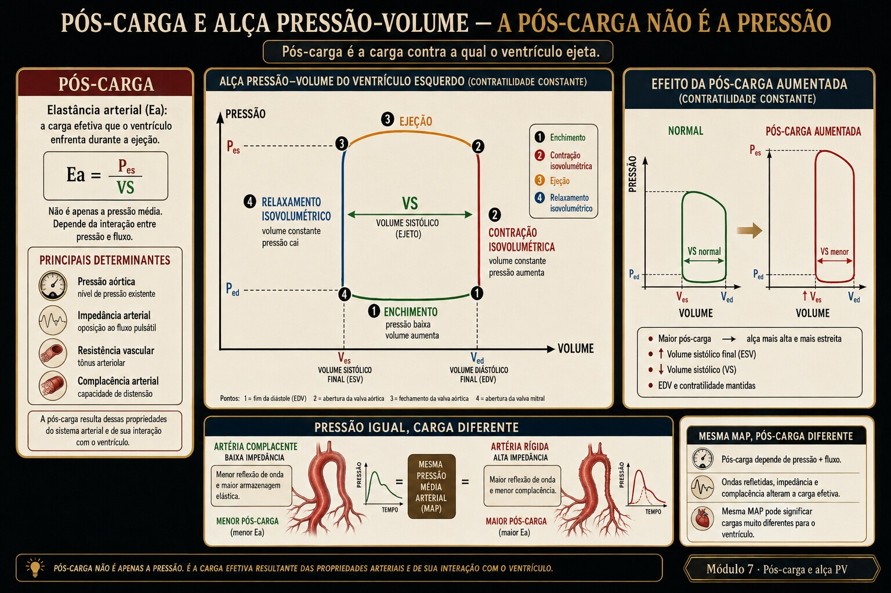

A alça pressão-volume mostra a sístole como geometria: a contratilidade é a inclinação da ESPVR; a pós-carga é a reta de Ea; o débito nasce do acoplamento entre elas. E é por isso que, no coração fraco, baixar a pós-carga sobe o débito.

Fig. 7 · Pós-carga na alça pressão-volume. Pós-carga é a carga efetiva durante a ejeção, influenciada por pressão, fluxo, impedância e complacência arterial.
Baixei a pressão e o débito subiu
Cinco atos. A variável escondida é o que "pós-carga" realmente significa. (Caso didático; nenhuma conduta é prescrita.)
Ato 1 · a porta
Coração dilatado, hipertenso agudo, mal perfundindo. "PA alta — não posso baixar, vai piorar o débito."
PA 185/110EF baixaextremidades frias
Ato 2 · a leitura ingênua
Confunde-se PA com pós-carga: "se a pressão está alta, o coração está empurrando forte". Mas a perfusão é ruim.
Ato 3 · a fenda
Pós-carga não é a PA: é a carga contra a ejeção (a Ea). Um ventrículo fraco contra uma Ea alta ejeta pouco — e a própria PA alta é parte do problema, não prova de força.
Ato 4 · decompor
Na alça PV: a ESPVR (contratilidade) está rebaixada; a reta de Ea está íngreme. Baixar a Ea (vasodilatador) gira a reta, o ponto sístole-final desliza pela ESPVR, a alça alarga → mais SV, com Pes menor. O débito sobe ao baixar a pressão.
Ato 5 · a ferramenta
A alça animada mostra Ea, Ees e o acoplamento se movendo. É o Instrumento.
▸ Revelar a variável escondida
A variável é a elastância arterial Ea (pós-carga), distinta da PA. No ventrículo desacoplado (Ea/Ees alto), reduzir a Ea melhora o acoplamento e aumenta o SV — visível como a alça que alarga e o ponto que desce pela ESPVR. A PA cai, o débito sobe.
Trilha socrática
Siga as setas pela alça.
O que é pós-carga?
Não é a PA. É a carga contra a ejeção — modelada como a elastância arterial Ea (reta que parte do VDF no eixo de volume).
E contratilidade?
A inclinação da ESPVR (Ees): quão íngreme é a relação pressão-volume no fim da sístole. Independe da pré-carga e da pós-carga.
Onde a sístole "termina"?
No ponto onde a reta de Ea cruza a ESPVR — a interseção define Ves e Pes de uma vez (Sunagawa).
Como o SV aparece na alça?
É a largura da alça: VDF − Ves. SV = Ees·(VDF − V0)/(Ea + Ees) — depende dos dois elastâncias.
Por que EF mede acoplamento?
Porque EF ≈ 1/(1 + Ea/Ees). Fração de ejeção baixa = Ea/Ees alto = ventrículo desacoplado da carga.
E o caso: baixar a PA sobe o DC?
Sim, quando Ea/Ees está alto: reduzir a Ea gira a reta, o ponto desliza pela ESPVR, a alça alarga → mais SV com menor Pes. A pós-carga era o freio.
Instrumento · a alça pressão-volume ao vivo
A alça é construída pela interseção da ESPVR (contratilidade) com a reta de Ea (pós-carga). A área é o trabalho sistólico; a largura, o SV. Mexa nas três alavancas.
ESPVR (Ees · contratilidade)reta de Ea (pós-carga)EDPVR (diástole)alça · trabalhosístole-final
A reta de Ea parte do VDF no eixo de volume; sua inclinação é a pós-carga. Onde ela cruza a ESPVR está a sístole-final.
Lab · acoplamento Ea/Ees
Cenários ou as alavancas. O veredito de acoplamento vira; os banners explicam o mecanismo na alça — inclusive o resgate do caso.
ESPVREaEDPVRalçaES
Acoplamento ventrículo-arterial
—
Vasodilatador (↓Ea — mecanismo). A reta de Ea fica menos íngreme: o ponto sístole-final desliza pela ESPVR, a alça alarga → mais SV com Pes menor. No desacoplado, baixar a pós-carga sobe o débito.
Inotrópico (↑Ees — mecanismo). A ESPVR fica mais íngreme: para a mesma pré-carga e carga, ejeta mais (alça mais alta e larga).
Desacoplamento (Ea/Ees alto). Ventrículo fraco contra carga alta: EF e trabalho útil despencam, eficiência cai. É o terreno do cardiogênico.
Pós-carga alta. Ea íngreme: Pes alto e SV reduzido (afterload mismatch da alça). A PA alta é freio, não força.
Congestão. Pressão diastólica final acima de 18 mmHg: a alça subiu na diástole → pressões de enchimento elevadas a montante.
Avaliação · tutor gráfico
Cada questão desenha uma alça PV computada ao vivo. Leia ESPVR, Ea, o acoplamento e o SV — feedback persistente.
0 / 0 respondidas
Honestidade do modelo
Material educacional · não é suporte à decisão. Ensina-se a mecânica da alça e do acoplamento — nunca dose, alvo ou conduta para um paciente específico.
→ Modelo de elastância variável de Sunagawa/Suga: ESPVR e reta de Ea lineares, Ea como resumo da pós-carga (ignora complacência/onda de reflexão pulsátil). → O trecho de ejeção da alça é desenhado de forma idealizada (sem o detalhe da pressão aórtica pulsátil); o trabalho é a área do quadrilátero, aproximação do trabalho real. → A EDPVR é exponencial idealizada. → V0 é fixo (na vida muda com remodelamento). Os deslocamentos e o acoplamento são fiéis; os números, exatos dentro do modelo.
Pontes
→ Módulo 6 · Frank-Starling — a ESPVR é a contratilidade que a Starling resume; a EDPVR é a mesma diástole.
→ Módulo 16 · Cardiogênico — a alça em falência: ESPVR rebaixada, a espiral e a congestão retrógrada.